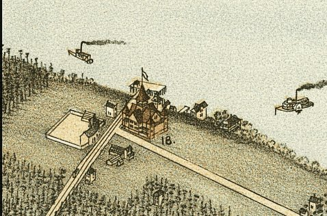

| Seattle, Washington - 1981: Madison Park |
|---|
 |
| Birds-eye-view of Seattle and environs King
County, Wash., 1891. Hughes Litho. Co. Koch, Augustus, b. 1840. CREATED/PUBLISHED Chicago, 1891. NOTES Perspective map not drawn to scale. Indexed for points of interest. REFERENCE LC Panoramic maps (2nd ed.), 975 |